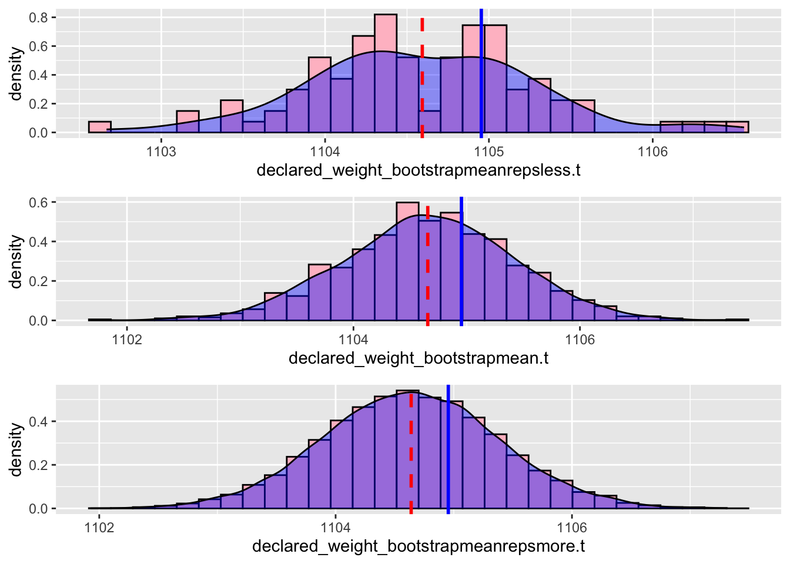
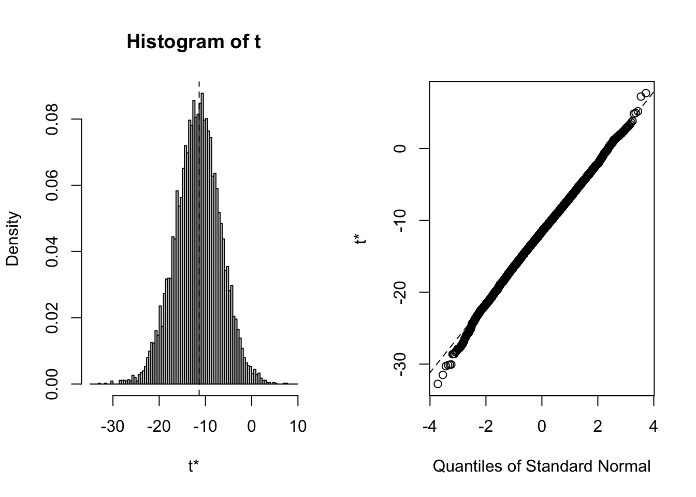
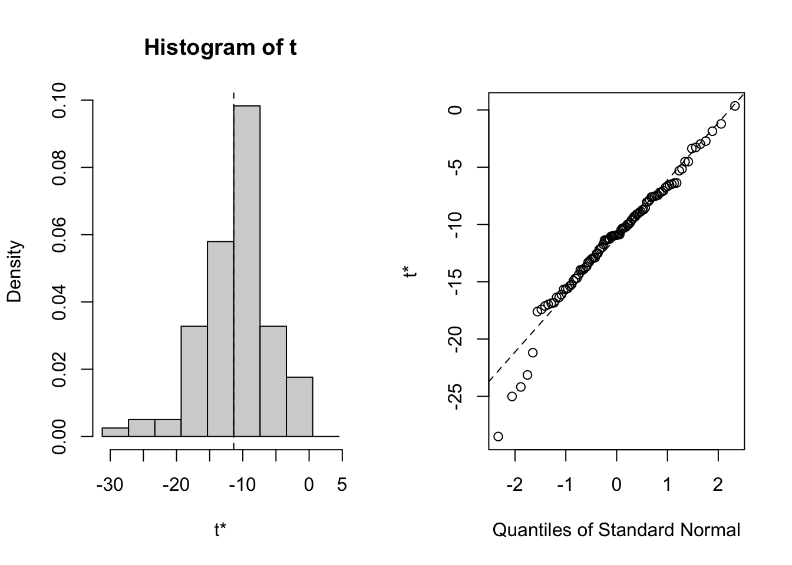
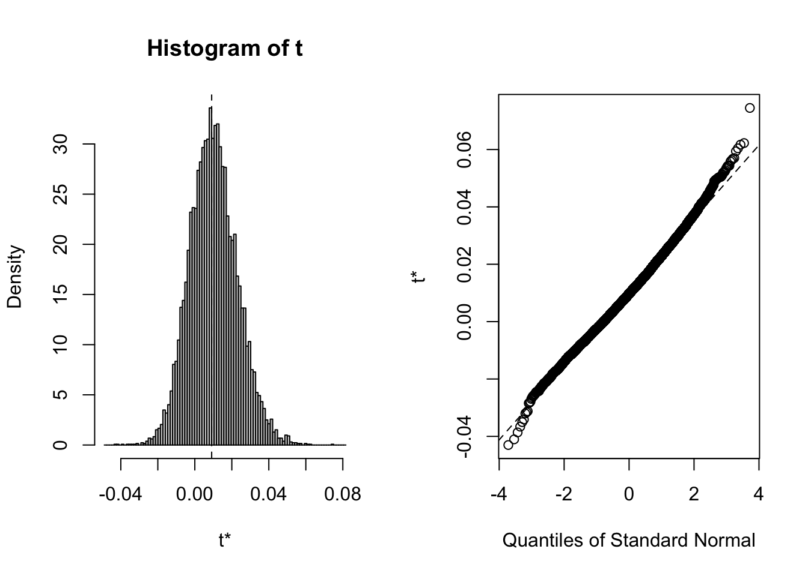
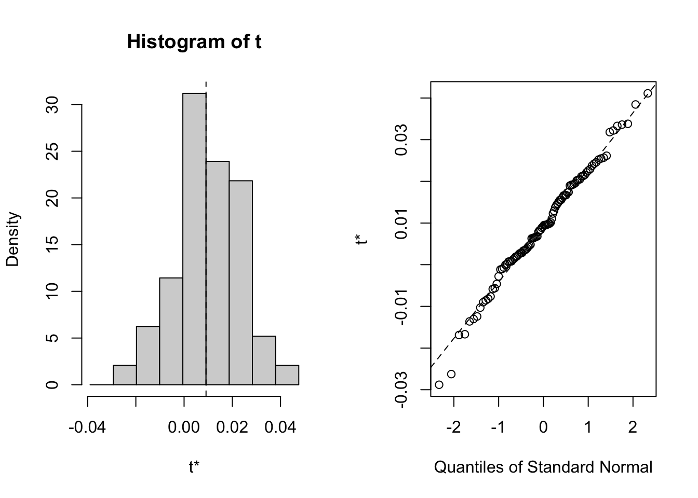

#install.packages('boot')Bootstrapping with Linear Regression Vignette
Bootstrapping Overview
Derived from the root word “bootstrap” and defined by Oxford Dictionary as a verb for getting into or out of a situation using existing resources, bootstrapping in data science carries a similar self sufficient meaning. Bootstrapping is a tool that can be applied to almost any data set in order to construct confidence intervals, calculate standard error, and perform hypothesis testing on numerous different sample statistics. Bootstrapping is self sufficient in that it “utilizes its existing resources” by resampling a provided original data set with replacement numerous times(up to thousands) to create numerous new resampled data sets of the same size as the original data set. Once these simulated data sets are gathered, the sample statistics across all newly resampled data sets are compared and analyzed as the new sampling distribution, providing more valuable data that is more representative of the population the sample was initially gathered from. Creating summary statistics and data that is much more representative of the analyzed population allows for the impressions and predictions made from this data set to be of higher validity than those based merely on the smaller original sample, boosting confidence in predictions.

Why Bootstrap?
Bootstrapping is desirable in many situations as its resampling can be used to assist in providing better data through estimation of possible sampling distributions, better validating any predictions made. For instance, when stuck with a small data set, as data scientists, we are weary of how well it is able to represent the entire population of which it is a subset of. Samples and their distributions vary each time they are taken, but through bootstrapping’s high quantity resampling with replacement, sample statistics are able to be taken from each newly made data set and compared across the other newly created data sets to form overarching sample distributions that can have confidence intervals or other hypothesis testing constructed from.
Non-parametric Bootstrapping
There are two main types of bootstrapping, parametric and non-parametric. Non-parametric bootstrapping is the more simplistic core of bootstrapping and makes no assumption on the distribution of the provided sample and its observations. It resamples randomly, with each observation in the sample having an equal probability of being selected, pulling observations with replacement until new samples of the same size are created. Non-parametric bootstrapping is an effective method, however, can be problematic when used on extremely small data sets that may contain trends not present in the overarching population. Parametric on the other end is slightly more advanced in that it resamples the original sample data with a predetermined distribution function with parameters that are estimated the random sample.

Application with Horse Racing data
First install the boot package. Run the below code in your console.
library('boot')
library('dplyr')
Attaching package: 'dplyr'The following objects are masked from 'package:stats':
filter, lagThe following objects are masked from 'package:base':
intersect, setdiff, setequal, unionlibrary('ggplot2')
library('ggpubr')#preprocessing
#we are subsetting the original, randomly selecting only 1000 of the 79,446 observations to show the benefits of bootstrapping.
set.seed(12345)
runsdata <- read.csv('../data/raw/runs.csv')
weightestimate <- runsdata %>% select(horse_age,declared_weight,actual_weight,finish_time,horse_id) %>% sample_n(7000)Let us take a look at the most basic use of bootstrapping. As it is a resampling method, bootstrapping allows us to create confidence intervals of summary statistics. Let us take a look at this in the context of declared weights in our data.
First we must create a function, this will tell the bootstrapping method what statistic we are interested in. For our demonstration purposes, we will keep it simple and choose mean as our statistic of interest. Feel free to change the statistics however, with cor(),sd() or any other statistic. You can also change, the variable that is being examined between, horse_age,declared_weight,actual_weight,finish_time and horse_id. (If you choose horse_id you will probably see the greatest range in the confidence interval)
functionmean <- function(data,i){
dataframe1<-data[i,] #this step is used for indexing row
return(mean(dataframe1$declared_weight))
}Now let us apply the boot function.
declared_weight_bootstrapmean<-boot(weightestimate,functionmean,R=1000)The basic boot function takes 3 arguments. The first is the data, then the function of the statistic, and R is the number of resample or repetitions (generally 1000 resamples is a good number). For further documentation, go to https://www.rdocumentation.org/packages/boot/versions/1.3-28/topics/boot .
Let us explore the object which is created with the boot function.
declared_weight_bootstrapmean
ORDINARY NONPARAMETRIC BOOTSTRAP
Call:
boot(data = weightestimate, statistic = functionmean, R = 1000)
Bootstrap Statistics :
original bias std. error
t1* 1104.641 0.01529744 0.7604029You will find that t is a list of the sample statistics generated by resampling. Let us take a look at the histogram of t. With the red line representing the mean of the sampling distribution and the blue line representing the actual mean of the population.
popmean<-mean(runsdata$declared_weight)
df<-data.frame(declared_weight_bootstrapmean$t)
histogramdec_weight<-ggplot(df,aes(declared_weight_bootstrapmean.t))+geom_histogram(aes(y=..density..),color='black',fill='pink')+geom_density(fill='blue',alpha=0.4)+geom_vline(aes(xintercept=mean(declared_weight_bootstrapmean.t)),color ='red', linetype = 'dashed', size =1)+geom_vline(aes(xintercept=popmean),color ='blue', linetype = 'solid', size =1)Warning: Using `size` aesthetic for lines was deprecated in ggplot2 3.4.0.
ℹ Please use `linewidth` instead.Now let us compare the sample distribution more as replication increases and decreases.
declared_weight_bootstrapmeanrepsmore<-boot(weightestimate,functionmean,R=10000)
df1<-data.frame(declared_weight_bootstrapmeanrepsmore$t)
histogramdec_weightrepsmore<-ggplot(df1,aes(declared_weight_bootstrapmeanrepsmore.t))+geom_histogram(aes(y=..density..),color='black',fill='pink')+geom_density(fill='blue',alpha=0.4)+geom_vline(aes(xintercept=mean(declared_weight_bootstrapmeanrepsmore.t)),color ='red', linetype = 'dashed', size =1)+geom_vline(aes(xintercept=popmean),color ='blue', linetype = 'solid', size =1)
declared_weight_bootstrapmeanrepsless<-boot(weightestimate,functionmean,R=100)
df2<-data.frame(declared_weight_bootstrapmeanrepsless$t)
histogramdec_weightrepsless<-ggplot(df2,aes(declared_weight_bootstrapmeanrepsless.t))+geom_histogram(aes(y=..density..),color='black',fill='pink')+geom_density(fill='blue',alpha=0.4)+geom_vline(aes(xintercept=mean(declared_weight_bootstrapmeanrepsless.t)),color ='red', linetype = 'dashed', size =1)+geom_vline(aes(xintercept=popmean),color ='blue', linetype = 'solid', size =1)figure1 <- ggarrange(histogramdec_weightrepsless,histogramdec_weight,histogramdec_weightrepsmore,ncol=1)Warning: The dot-dot notation (`..density..`) was deprecated in ggplot2 3.4.0.
ℹ Please use `after_stat(density)` instead.`stat_bin()` using `bins = 30`. Pick better value with `binwidth`.
`stat_bin()` using `bins = 30`. Pick better value with `binwidth`.
`stat_bin()` using `bins = 30`. Pick better value with `binwidth`.figure1
Although just barely you will find that as the number of replications increases the sampling distribution begins to look more and more normal. And although it is hard to tell the mean of the distribution of samples is approaching the population mean as it increases. (Note: There are diminishing returns and bootstrapping as you may have noticed is resource intensive)
You will also find that there are other parameters that the boot function can take, such as strata, stype, sim, and weights. We will focus on sim, specifically the ‘parametric’ value. The default of the boot function is to run a nonparametric bootstrap. Let us try different values for sim. (Note: Do not run a parametric bootstrap, it requires a distribution function not covered in this vignette.)
declared_weight_balbootstrapmean<-boot(weightestimate,functionmean,R=1000,sim='balanced')The balanced boostrap ensures that each observation occurs exactly R times across the union set of all resamples which means that each observation will affect the statistic exactly the same.
declared_weight_bootstrapmean
ORDINARY NONPARAMETRIC BOOTSTRAP
Call:
boot(data = weightestimate, statistic = functionmean, R = 1000)
Bootstrap Statistics :
original bias std. error
t1* 1104.641 0.01529744 0.7604029declared_weight_balbootstrapmean
BALANCED BOOTSTRAP
Call:
boot(data = weightestimate, statistic = functionmean, R = 1000,
sim = "balanced")
Bootstrap Statistics :
original bias std. error
t1* 1104.641 0 0.7300154Bootstrapping in the context of Linear Regression
We can also use bootstrapping to estimate the model coefficients for linear regression We build a logistic regression model to predict whether a horse will win in a race, using age, rating, declared weight, actual weight, and draw as predictors.
origin=read.csv("../data/raw/runs.csv")
source("../scripts/data_cleaning.R")── Attaching packages ─────────────────────────────────────── tidyverse 1.3.2 ──
✔ tibble 3.1.8 ✔ purrr 0.3.4
✔ tidyr 1.2.1 ✔ stringr 1.4.1
✔ readr 2.1.2 ✔ forcats 0.5.2
── Conflicts ────────────────────────────────────────── tidyverse_conflicts() ──
✖ dplyr::filter() masks stats::filter()
✖ dplyr::lag() masks stats::lag()data=preprocessing(500)Similar to the basic use of bootstrapping for sample statistics, we need to first create a function for the statistics that we are interested in. Since we are interested in whether a horse can win in the race, the response variable is binary, we use glm() function with parameter family = “binomial”to do a logistic regression. The other difference should be changing the returns for the function to be the coefficients of each fits.
bs <- function(formula, data, indices) {
d <- data[indices,] # allows boot to select sample
fit <- glm(formula, data=d,family = "binomial")
return(coef(fit))
}Try to re-sample for 10000 times and 100 times to see the influence of replication.
results_10000 <- boot(data=data, statistic=bs,
R=10000, formula=won~horse_age+horse_rating+
declared_weight+ actual_weight+draw)
results_10000
ORDINARY NONPARAMETRIC BOOTSTRAP
Call:
boot(data = data, statistic = bs, R = 10000, formula = won ~
horse_age + horse_rating + declared_weight + actual_weight +
draw)
Bootstrap Statistics :
original bias std. error
t1* -11.362701155 -2.819865e-01 4.887141402
t2* -0.155413286 -1.140946e-01 0.415708741
t3* 0.009105081 1.059207e-03 0.012840851
t4* -0.002210370 -6.981115e-05 0.003002803
t5* 0.092211604 4.708138e-03 0.029873756
t6* -0.027945249 -8.397178e-04 0.044704471results_100 <- boot(data=data, statistic=bs,
R=100, formula=won~horse_age+horse_rating+
declared_weight+ actual_weight+draw)
results_100
ORDINARY NONPARAMETRIC BOOTSTRAP
Call:
boot(data = data, statistic = bs, R = 100, formula = won ~ horse_age +
horse_rating + declared_weight + actual_weight + draw)
Bootstrap Statistics :
original bias std. error
t1* -11.362701155 0.2353486742 5.001799274
t2* -0.155413286 -0.1116282246 0.397866563
t3* 0.009105081 0.0002866810 0.013530321
t4* -0.002210370 -0.0009076316 0.002867898
t5* 0.092211604 0.0082335099 0.033657751
t6* -0.027945249 -0.0040987149 0.045225579Choose some of the parameters to compare, we can generally get the similar results as the previous case. As the resampling times become larger, the distribution tends to be more normal.
par (mfrow = c(4,3))
plot(results_10000, index=1) 
plot(results_100, index=1)
plot(results_10000, index=3)
plot(results_100, index=3) 
Conclusion
Bootstrapping can be a powerful statistical technique in the right situation. It is invaluable for working with smaller sample sizes of data that are not large enough for straightforward data analysis. It can give crucial insight into the variance and distribution of population statistics, while also making it easier to work with data of an unknown distribution. In the context of regression models, bootstrapping to estimate the variance of regression coefficients gives insight as to how consistent our model is.
Bootstrapping is limited by its central assumption that the original sample chosen represents the population well. If the original sample is not an unbiased subset of the population, then repeatedly sampling subsets of that sample will result in a similarly biased distribution. The amount of processing power needed for bootstrapping can also limit its effectiveness, especially when working with larger bootstrap samples and/or large amounts of resamples.
Refer to our reference list in the README file for further study on bootstrapping.